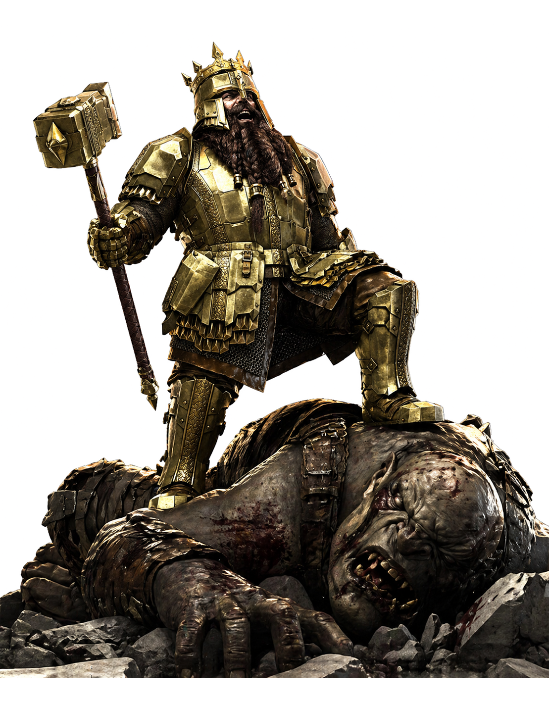

Ashborn
Halls of Saga
The hall is burning. Pick a side. A two-player skirmish wargame of small warbands, cold winters, and oaths kept past the point of sense.

A long winter, and a quiet betrayal.
Three winters into the long frost, the longships came up the Caernarfon estuary at dawn. The hall was already burning when the spear-shieldmaiden took the oath; her father had been dead nine days, and the crown was hers by sword and by saga both.
Ashborn is a wargame of small warbands and large consequences. Each side commands twelve to twenty figures, fights across a single long evening, and resolves a single chapter of an ongoing saga. Win or lose, your warriors carry their wounds — and their grudges — into the next game.
Four warbands at launch.

Sigrun's oath
Sworn to the wolf, salt and fire.
Stone-king's host
Twelve towers, one wall, one king.

The high pass
The bear walks where the road ends.

Hakon's children
A boy who has not spoken since.
Be told when the hall opens.
One letter a month. The print run, the rules previews, the saga progress. No noise.